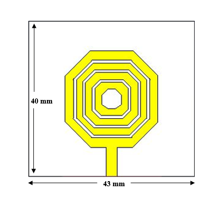
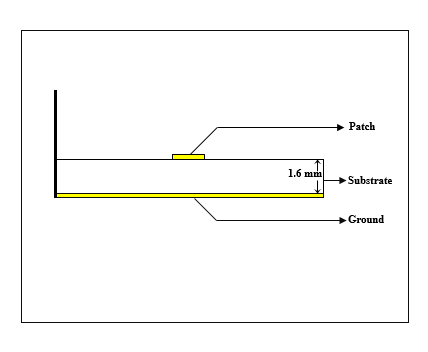
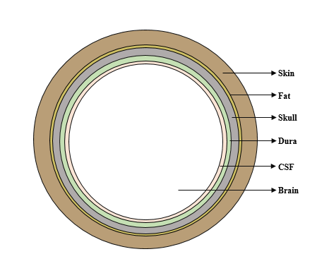
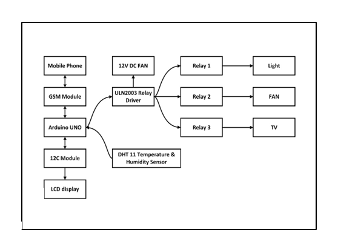
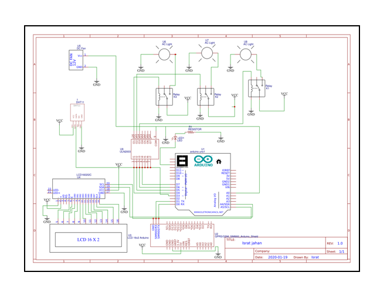
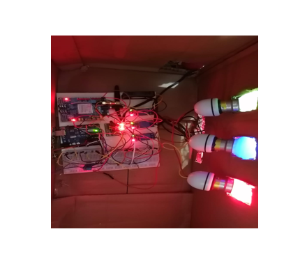
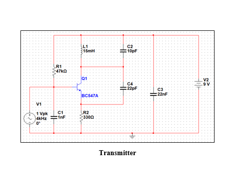
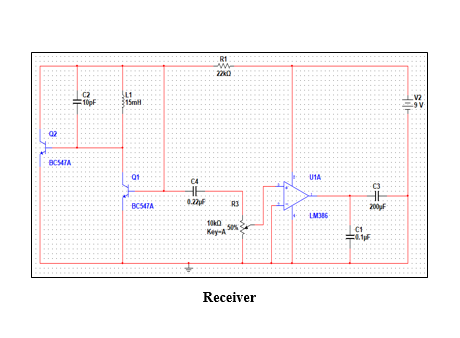
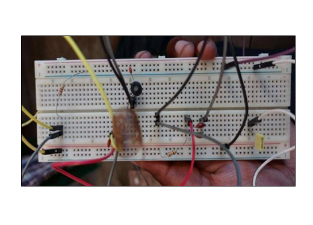

RESEARCH
01. Design & Analysis of a Dual-Band Miniaturized Rectangular Patch Antenna for Millimeter-Wave Applications.
(Authors: Md. Omar Faruk Noman, Arif Istiaque Rupom, Md. Azad Hossain)
In this work, a miniaturized, dual-band rectangular patch antenna for 5G millimeter-wave applications is introduced. It employs a slotted patch structure mounted on a FR-4 substrate with thickness of 0.8mm to achieve dual frequency characteristics. The antenna has a simple architecture and an overall dimension of 8 × 8 × 0.87 mm3 which is significantly smaller compared to other traditional patch antennas. The operating frequencies of antenna are 30.65 GHz and 38.75 GHz respectively which falls inside the range used by the 5G network. The antenna has been modelled and simulated in CST microwave studio. Proposed structure shows excellent results with S11-parameters of -37.0 dB and -56.84 dB and bandwidths of 2.32 GHz and 3.5 GHz at the operating frequencies respectively. The antenna exhibits a highly directional far-field pattern with directivity of 5.33 dBi and 7.62 dBi at 30.65 GHz and 38.75 GHz. Proposed antenna is able to achieve excellent performance while maintaining a compact form factor, thus making it more efficient to utilize in 5G wireless and cellular systems to meet the requirements of IR4. (Learn More)


×
02. Design of a Slotted Patch Circular Antenna Array for Breast Tumor Identification.
(Authors: Ishrat Jahan, Md. Omar Faruk Noman, Md Ahasan Kabir)
Breast cancer has been one of the main causes of death in women in the last few decades, highlighting the need for more accurate methods of early detection that can facilitate more rapid and efficient treatment. X-ray mammography, magnetic resonance imaging (MRI), and ultrasound are all diagnostic tools for the early diagnosis of breast cancer. But they are constrained in some ways. For example, X-ray mammography, the most popular breast screening procedure, can miss cancer detection due to low tissue contrast and radiation exposure. In comparison to X-ray mammography, microwave imaging is safer for patients and offers higher detection rates. MBI utilizes differences in the electrical characteristics of fatty breast tissues and abnormal ones to diagnose breast cancer. This paper compares and contrasts four different microstrip patch antennas operating at 2.45 GHz for use in microwave breast imaging in the ISM frequency band. These antennas can identify tumors by analyzing and comparing their s-parameter, E-field, H-field, radiation pattern, and specific absorption rate (SAR). By placing each antenna separately on the breast skin and analyzing the field values and surface current density differences between the healthy and malignant tissue of the breast phantom designed and simulated in CST STUDIO SUITE, a single antenna is selected for the six-element antenna array to increase tumor detection sensitivity. (Learn More)



×
03. Design and Analysis of an Octagonal Slotted Patch Microstrip Antenna for Brain Tumor Detection.
(Authors: Ishrat Jahan, Md. Omar Faruk Noman, Mahabub-E-Sanjida Tasnim, Md. Ahasan Kabir)
Brain tumor causes unexpected death throughout the world. Early detection can reduce the mortality rate significantly. This research paper has presented a miniatured, slotted octagonal-shaped, single-fed wearable antenna designed to operate in the 2.45 GHz Industrial, Scientific, and Medical (ISM) band to detect and localize brain tumors. The designed antenna is small in size, wide bandwidth, and has promising parameter results for distinguishing between healthy and contaminated brain tissues. To create a prominent antenna and human head phantom model CST Microwave Studio Suite has been used. FR-4 is specifically chosen as the substrate for its flexibility, while copper is utilized for both the patch and the ground. The proposed octagon-shaped slotted antenna has a dimension of 43× 40× 8.8 mm3. FR-4 has been used as substrate and copper is employed for both the patch and the ground. Six uniform layers of Skin, Fat, Skull, Dura, CSF, and Brain have been incorporated to ensure patient safety. The proposed antenna has been tested using a simulated model of the human head. The simulation results have found a return loss of -50.55db at operation frequency 2.45gHz with around 85% lower Specific Absorption Rate (SAR) value than the permissible value. The return loss, radiation pattern, E-Field, H-Field and SAR of the proposed wearable antenna are measured and compared to those of a head phantom model with a 4mm and 6mm tumor implanted in a human brain to simulate the effects of cancer. There is a significant difference in the values of the simulated result between the three scenarios: with and without tumor, with different tumor size, and with varying tumor location relative to the antenna. By analyzing these simulated data, the tumor's location can be determined effectively.


×
PROJECTS
01. GSM Based Home Automation System.
This project is designed to control home appliances through Arduino Uno microcontroller & SIM900 GSM/GPRS shield. The user can assure the safety of his/her house from anywhere of the world under GSM coverage network. It is possible because GSM technology has large baud rate. This system is implemented with four loads and a temperature and humidity sensor. The control of the home appliances is done through the SMS sent through the GSM network and the hardware. This system uses mobile phone as controlling device which control the home appliances by sending SMS and receiving phone call. The system can detect the undesirable temperature rising & control that temperature by activating or deactivating the DC fan. This system is also convenient for handicapped people for ease of controlling the whole system. (Learn More)



×
02. FM Radio Transmitter and Receiver.
In this project, FM radio transmitter is designed to generate an RF signal and a receiver to receive the transmitted signal. In transmitter, when voltage is applied to the circuit, LC oscillator generates a carrier signal by charging and discharging of the capacitor. The input signal provided at the input terminal is amplified by the transistor. Then input signal is combined with carrier signal to produce modulated signal and is transmitted. Receiver antenna receives the transmitted signal with the help of tuning circuit in the receiver. A low pass filter is used to pass the low frequency component. (Learn More)



×
03. Vehicle Estimation for Traffic Control.
Designed a traffic system for estimating number of vehicles in a road.
04. Design of a Complete Network Topology and Configure It in RIP Routing Protocol.
A complete network topology has been designed with routers, switches, hubs and end elements. The system had been configured with RIP routing protocol.
05. Function Generator with Over Voltage Protection.
Designed a circuit to generate different type of waves (sinusoidal, triangular, square) along with over voltage protection.
06. A Four-Way Traffic Control System Using Microcontroller.
A microcontroller-based system has been designed to successfully control traffic in a four-way lane.
07. Implementation of Pulse Code Modulator.
Designed a circuit to generate pulse code modulated signal.